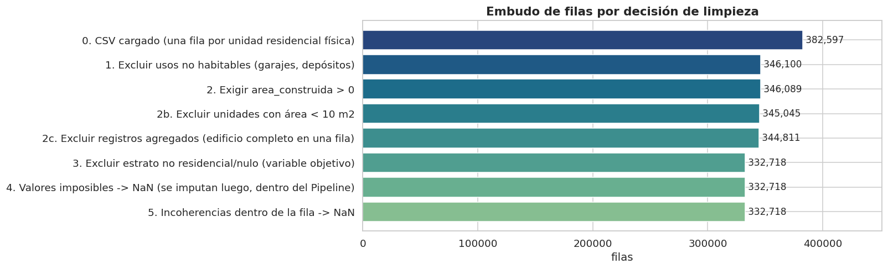

1. Base de datos#
Autores: María Carolina Cantillo Orozco (200179105) y Juan Camilo Oñoro Araujo (200177329)
Este capítulo cubre la Sección 1 del rubric: problema de investigación, justificación y fuente del dataset, diccionario de variables, estructura de los datos, tamaño de muestra y calidad de datos (duplicados, valores imposibles, categorías mal escritas), más las consideraciones éticas.
Importante
Todo lo que se hace en este capítulo son reglas fila a fila que no aprenden nada de otras filas (por ejemplo «un año de construcción de 1512 es imposible»). Ninguna de ellas usa estadísticas del conjunto de datos, por eso pueden aplicarse antes de reservar el conjunto de prueba (capítulo 2) sin generar fuga de información. Todo lo que sí aprende de los datos (medianas para imputar, umbrales de outliers, escalado) se calcula después, solo con entrenamiento.
1.1 Problema de investigación#
Pregunta. ¿En qué medida las características físicas y catastrales de una unidad de vivienda (área construida, número de baños y habitaciones, pisos, antigüedad, tipo de vivienda, régimen de propiedad) y su localización permiten predecir su estrato socioeconómico (1 a 6) en Barranquilla?
Tipo de tarea. Clasificación supervisada multiclase (6 clases, ordinales) con datos que tienen coordenadas pero no tiempo: según la Figura 1 del rubric se sigue la ruta A (clasificación) añadiendo la sección 2.7 (componente espacial) y una partición por bloques espaciales.
Por qué importa. En Colombia el estrato (Ley 142 de 1994) determina las
tarifas y subsidios cruzados de los servicios públicos domiciliarios y se usa
para focalizar inversión social. Según el DANE, la estratificación clasifica
los inmuebles residenciales a partir de la base catastral y de las
características de las viviendas y su entorno. Un modelo que relacione la
información catastral con el estrato sirve para (i) entender qué atributos
físicos se asocian con cada estrato, (ii) detectar predios cuyo estrato
asignado es atípico frente a sus características (posibles casos a revisar) y
(iii) proponer un estrato de referencia para predios que hoy aparecen como
No_Aplica/Otro.
Relación con la tesis. La tesis (tipologías constructivas y demanda de enfriamiento) usa estos mismos datos con un enfoque no supervisado; este entregable es el ejercicio supervisado del curso y le aporta a la tesis una base de datos limpia, auditada y con un EDA espacial completo.
1.2 Justificación, fuente y licencia#
Aspecto |
Detalle |
|---|---|
Fuente |
Servicio ArcGIS REST de datos abiertos de catastro de la Alcaldía de Barranquilla (Gerencia de Gestión Catastral) |
Enlace |
|
Capas usadas |
505 Características, 305 Unidad de construcción, 602 relación UC–Predio, 500 Predio, 315 Terreno (geometría), 601 relación Terreno–Predio |
Descarga |
|
Fecha de descarga |
15 de septiembre de 2026 |
Licencia |
Publicado como dato abierto por la Alcaldía de Barranquilla (Gerencia de Gestión Catastral) en su portal de datos geográficos. El servicio no declara una licencia explícita en sus metadatos; se usa como información pública con fines académicos y se cita la fuente. No se redistribuyen datos de personas: el NPN y las coordenadas se tratan como se explica en la sección 1.8. |
Por qué este dataset. (i) Es información oficial, completa para la zona urbana formal (no es una encuesta), (ii) supera ampliamente el mínimo de 20 000 observaciones, (iii) combina variables físicas, categóricas y espaciales, lo que permite un EDA completo (uni, bi, multivariado y espacial) y (iv) es el mismo insumo de la tesis.
1.3 Carga y embudo de filas#
El embudo muestra cuántas filas quedan tras cada regla y por qué. Esto
resuelve la tabla pendiente de la bitácora (sección 3.3): los números salen
directamente de src/limpieza.py. Además de los usos no habitables (paso 1),
la falta de área (paso 2) y el estrato no residencial (paso 3), el embudo
incluye dos reglas de alcance que excluyen filas que no describen una
vivienda (2b: área < 10 m²; 2c: registros agregados) y dos pasos que no
eliminan filas: valores imposibles (paso 4) e incoherencias dentro de la
fila (paso 5), que pasan a NaN con bandera. Su justificación está en la
sección 1.7.3.
# Carga del CSV crudo y aplicación de las reglas deterministas de limpieza.
# Son reglas fila a fila (no aprenden de otras filas), por eso pueden ir ANTES de
# reservar el conjunto de prueba sin generar fuga de información.
# cargar_crudo lee el CSV (NPN como texto para no perder ceros) y añade 'id_fila'.
crudo = L.cargar_crudo()
# Se resta 1 a las columnas porque 'id_fila' la agrega el pipeline, no viene del CSV.
print(f"Archivo: {C.ruta_csv().name} | filas: {len(crudo):,} | columnas: {crudo.shape[1] - 1}")
# limpiar devuelve: el dataset de trabajo, el embudo (filas que quedan tras cada
# regla y su motivo) y la tabla de valores físicamente imposibles o incoherentes
# convertidos en NaN (pasos 4 y 5).
df, embudo, tabla_imposibles = L.limpiar(crudo, verbose=False)
embudo
Archivo: predios_residenciales_barranquilla.csv | filas: 382,597 | columnas: 18
| paso | filas | motivo | cambio | % del total inicial | |
|---|---|---|---|---|---|
| 0 | 0. CSV cargado (una fila por unidad residencia... | 382597 | 0 | 100.000 | |
| 1 | 1. Excluir usos no habitables (garajes, depósi... | 346100 | no son vivienda: fuera del alcance del problema | -36497 | 90.460 |
| 2 | 2. Exigir area_construida > 0 | 346089 | sin área construida no hay unidad de vivienda ... | -11 | 90.460 |
| 3 | 2b. Excluir unidades con área < 10 m2 | 345045 | no son vivienda: probables parqueaderos o depó... | -1044 | 90.180 |
| 4 | 2c. Excluir registros agregados (edificio comp... | 344811 | habitaciones > 20, baños > 15 o área > 2000 m2... | -234 | 90.120 |
| 5 | 3. Excluir estrato no residencial/nulo (variab... | 332718 | No_Aplica/Otro/nulo: imputar el objetivo inven... | -12093 | 86.960 |
| 6 | 4. Valores imposibles -> NaN (se imputan luego... | 332718 | 484 filas tenían al menos un valor imposible; ... | 0 | 86.960 |
| 7 | 5. Incoherencias dentro de la fila -> NaN | 332718 | 396 filas con baños o habitaciones incoherente... | 0 | 86.960 |

Vista de las primeras filas. Por la consideración ética de la sección 1.8 el número predial se muestra truncado (identifica un inmueble concreto).
# Vista de las primeras filas con el número predial enmascarado (consideración
# ética 1.8: el NPN completo identifica un inmueble concreto y permite reidentificar).
def enmascarar_npn(s):
# Conserva solo los 12 primeros dígitos (depto, municipio, zona, sector...),
# que ubican la zona pero no el predio individual.
return s.astype("string").str[:12] + "…"
# Se omiten las columnas de bandera (flag_*) para que la vista sea legible.
vista = df.drop(columns=df.filter(like="flag_").columns).head(5).copy()
vista["numero_predial_nacional"] = enmascarar_npn(vista["numero_predial_nacional"])
vista["npn_edificio"] = enmascarar_npn(vista["npn_edificio"])
vista.T # transpuesta: una fila por variable, más fácil de leer con muchas columnas
| 0 | 1 | 2 | 3 | 4 | |
|---|---|---|---|---|---|
| id_fila | 14 | 23 | 49 | 50 | 53 |
| numero_predial_nacional | 080010002000… | 080010002000… | 080010003000… | 080010003000… | 080010003000… |
| estrato | Bajo_Bajo_1 | Bajo_Bajo_1 | Bajo_Bajo_1 | Bajo_Bajo_1 | Bajo_Bajo_1 |
| tipo_vivienda | tv_4 | tv_4 | tv_4 | tv_4 | tv_4 |
| destinacion_economica | Habitacional | Habitacional | Habitacional | Habitacional | Habitacional |
| condicion_predio | Informal | Informal | NPH | NPH | NPH |
| area_catastral_terreno | 0.000 | 0.000 | 4,932.200 | 4,932.200 | 1,142.400 |
| area_construida | 44.740 | 44.740 | 39.540 | 39.540 | 39.540 |
| uso | Residencial_Vivienda_Hasta_3_Pisos | Residencial_Vivienda_Hasta_3_Pisos | Residencial_Vivienda_Hasta_3_Pisos | Residencial_Vivienda_Hasta_3_Pisos | Residencial_Vivienda_Hasta_3_Pisos |
| tipo_planta | Piso | Piso | Piso | Piso | Piso |
| planta_ubicacion | 1.000 | 1.000 | 1.000 | 1.000 | 1.000 |
| altura | 3.000 | 3.000 | 3.000 | 3.000 | 3.000 |
| total_habitaciones | 1.000 | 2.000 | 2.000 | 2.000 | 1.000 |
| total_banios | 0.000 | 1.000 | 0.000 | 0.000 | 0.000 |
| total_plantas | 1.000 | 1.000 | 1.000 | 1.000 | 1.000 |
| anio_construccion | 2,024.000 | 2,024.000 | 2,019.000 | 2,022.000 | 2,023.000 |
| centroide_lon | NaN | NaN | -74.892 | -74.892 | -74.892 |
| centroide_lat | NaN | NaN | 10.951 | 10.951 | 10.951 |
| centroide_fuente | sin_dato | sin_dato | directo | directo | directo |
| estrato_num | 1 | 1 | 1 | 1 | 1 |
| antiguedad | 2.000 | 2.000 | 7.000 | 4.000 | 3.000 |
| npn_edificio | 080010002000… | 080010002000… | 080010003000… | 080010003000… | 080010003000… |
| x_km | NaN | NaN | -12.570 | -12.570 | -12.596 |
| y_km | NaN | NaN | -3.611 | -3.611 | -3.662 |
| dist_centro_km | NaN | NaN | 13.078 | 13.078 | 13.118 |
| tiene_coordenadas | False | False | True | True | True |
1.4 Diccionario de variables#
El rol de cada variable (objetivo, predictora, identificador, metadato) se
justifica en la auditoría de fuga (capítulo 9). Si el servidor responde, se
descargan también los alias y dominios oficiales de ArcGIS (por ejemplo, el
significado de los códigos de tipo_vivienda).
# Diccionario de variables: nombre, tipo, unidad, significado y ROL en el modelo.
# El rol (objetivo, predictora, identificador, metadato) es lo que luego se audita
# en el capítulo 9 para asegurar que ninguna columna con fuga entre al modelo.
dicc = pd.DataFrame([
("numero_predial_nacional", "texto (30 dígitos)", "—", "Número predial nacional (IGAC): depto, municipio, zona, sector, comuna, barrio, manzana, terreno, condición, edificio, piso, unidad", "identificador"),
("npn_edificio", "texto (22 dígitos)", "—", "Prefijo del NPN que identifica el edificio/lote (derivada)", "identificador / grupo"),
("estrato", "categórica ordinal (texto)", "—", "Estrato socioeconómico tal como llega de ArcGIS (Bajo_Bajo_1 … Alto_6, No_Aplica, Otro)", "origen del objetivo"),
("estrato_num", "categórica ordinal", "1–6", "Estrato numérico extraído del texto", "OBJETIVO"),
("area_construida", "numérica continua", "m²", "Área construida de la unidad", "predictora"),
("area_catastral_terreno", "numérica continua", "m²", "Área del terreno del predio (0 en unidades PH sin lote propio)", "predictora"),
("total_habitaciones", "numérica discreta", "conteo", "Número de habitaciones", "predictora"),
("total_banios", "numérica discreta", "conteo", "Número de baños", "predictora"),
("total_plantas", "numérica discreta", "conteo", "Número de plantas/pisos de la construcción", "predictora"),
("anio_construccion", "numérica discreta", "año", "Año de construcción", "origen de antigüedad"),
("antiguedad", "numérica discreta", "años", f"{C.ANIO_ACTUAL} − año de construcción (derivada)", "predictora"),
("planta_ubicacion", "numérica discreta", "piso", "Piso en que está la unidad", "predictora"),
("altura", "numérica continua", "m (verificar)", "Altura de la unidad de construcción", "predictora"),
("tipo_vivienda", "categórica nominal (código)", "—", "Código de dominio ArcGIS del tipo de vivienda", "predictora"),
("uso", "categórica nominal", "—", "Uso catastral de la unidad (casa, apartamento en PH, barraca…)", "predictora"),
("condicion_predio", "categórica nominal", "—", "Régimen: NPH (no propiedad horizontal), PH_Matriz, PH_Unidad_Predial, Informal…", "predictora"),
("destinacion_economica", "categórica nominal", "—", "Destinación económica del predio", "predictora"),
("tipo_planta", "categórica nominal", "—", "Tipo de planta (Piso, Sótano, Mezanine…)", "predictora"),
("centroide_lat / centroide_lon", "numérica continua", "grados (WGS84, EPSG:4326)", "Centroide del terreno del predio (o de su edificio matriz)", "espacial"),
("x_km / y_km", "numérica continua", "km", "Coordenadas proyectadas localmente, origen en el centro histórico (derivada)", "predictora espacial"),
("dist_centro_km", "numérica continua", "km", "Distancia al centro histórico (derivada)", "predictora espacial"),
("centroide_fuente", "categórica nominal", "—", "Cómo se obtuvo el centroide: directo / propagado_matriz / sin_dato (metadato del pipeline)", "metadato (excluida)"),
("flag_imposible_*", "booleana", "—", "Marca si el valor original era físicamente imposible y se convirtió en NaN", "auditoría"),
("flag_incoherente_*", "booleana", "—", "Marca si el valor era incoherente con el resto de la fila (baños o habitaciones) y se convirtió en NaN", "auditoría"),
], columns=["variable", "tipo", "unidad", "significado", "rol"])
# Intento opcional de enriquecer el diccionario con los alias y dominios oficiales
# del servicio ArcGIS (se descargan una vez y se guardan en datos/dominios_arcgis.json).
try:
from src.dominios import descargar_dominios
dominios = descargar_dominios()
# Alias oficial de cada campo; queda vacío para las variables derivadas.
dicc["alias ArcGIS"] = dicc["variable"].map(lambda v: (dominios.get(v) or {}).get("alias"))
# Tabla código -> significado de tipo_vivienda (llega como código numérico).
tv = (dominios.get("tipo_vivienda") or {}).get("dominio")
if tv:
print("Dominio oficial de tipo_vivienda:", tv)
except Exception as e: # sin internet o bloqueado: el libro sigue
print(f"(No se pudieron descargar los dominios de ArcGIS: {type(e).__name__}. "
"El diccionario se muestra sin alias oficiales.)")
dicc
Dominio oficial de tipo_vivienda: {'1': 'Vivienda de Interés Social', '2': 'Vivienda de Interés Prioritario', '3': 'Vivienda que no es de interés social', '4': 'No Aplica'}
| variable | tipo | unidad | significado | rol | alias ArcGIS | |
|---|---|---|---|---|---|---|
| 0 | numero_predial_nacional | texto (30 dígitos) | — | Número predial nacional (IGAC): depto, municip... | identificador | Número Predial Nacional |
| 1 | npn_edificio | texto (22 dígitos) | — | Prefijo del NPN que identifica el edificio/lot... | identificador / grupo | NaN |
| 2 | estrato | categórica ordinal (texto) | — | Estrato socioeconómico tal como llega de ArcGI... | origen del objetivo | Estrato |
| 3 | estrato_num | categórica ordinal | 1–6 | Estrato numérico extraído del texto | OBJETIVO | NaN |
| 4 | area_construida | numérica continua | m² | Área construida de la unidad | predictora | Área Construida |
| 5 | area_catastral_terreno | numérica continua | m² | Área del terreno del predio (0 en unidades PH ... | predictora | Área Catastral Terreno |
| 6 | total_habitaciones | numérica discreta | conteo | Número de habitaciones | predictora | Total Habitaciones |
| 7 | total_banios | numérica discreta | conteo | Número de baños | predictora | Total Baños |
| 8 | total_plantas | numérica discreta | conteo | Número de plantas/pisos de la construcción | predictora | Total Pisos |
| 9 | anio_construccion | numérica discreta | año | Año de construcción | origen de antigüedad | Año Construcción |
| 10 | antiguedad | numérica discreta | años | 2026 − año de construcción (derivada) | predictora | NaN |
| 11 | planta_ubicacion | numérica discreta | piso | Piso en que está la unidad | predictora | Planta Ubicación |
| 12 | altura | numérica continua | m (verificar) | Altura de la unidad de construcción | predictora | Altura |
| 13 | tipo_vivienda | categórica nominal (código) | — | Código de dominio ArcGIS del tipo de vivienda | predictora | Tipo de Vivienda |
| 14 | uso | categórica nominal | — | Uso catastral de la unidad (casa, apartamento ... | predictora | Uso |
| 15 | condicion_predio | categórica nominal | — | Régimen: NPH (no propiedad horizontal), PH_Mat... | predictora | Condición Predio |
| 16 | destinacion_economica | categórica nominal | — | Destinación económica del predio | predictora | Destinación Económica |
| 17 | tipo_planta | categórica nominal | — | Tipo de planta (Piso, Sótano, Mezanine…) | predictora | Tipo Planta |
| 18 | centroide_lat / centroide_lon | numérica continua | grados (WGS84, EPSG:4326) | Centroide del terreno del predio (o de su edif... | espacial | NaN |
| 19 | x_km / y_km | numérica continua | km | Coordenadas proyectadas localmente, origen en ... | predictora espacial | NaN |
| 20 | dist_centro_km | numérica continua | km | Distancia al centro histórico (derivada) | predictora espacial | NaN |
| 21 | centroide_fuente | categórica nominal | — | Cómo se obtuvo el centroide: directo / propaga... | metadato (excluida) | NaN |
| 22 | flag_imposible_* | booleana | — | Marca si el valor original era físicamente imp... | auditoría | NaN |
| 23 | flag_incoherente_* | booleana | — | Marca si el valor era incoherente con el resto... | auditoría | NaN |
1.5 Estructura de los datos#
Unidad de observación: la unidad residencial física (una fila de la capa 505 «Características» = una casa o un apartamento). Cada fila se une a su unidad de construcción, a su predio y al centroide del terreno. Las filas que no describen una vivienda individual (parqueaderos o depósitos de menos de 10 m², edificios completos en una sola fila) se excluyen en el embudo (pasos 2b y 2c, sección 1.7.3).
Nivel de agregación: unidad de vivienda (no manzana ni barrio). Varias unidades pueden pertenecer al mismo predio y al mismo edificio.
Tipo de datos: transversal con componente espacial (una foto del catastro en la fecha de descarga).
anio_construcciones un atributo, no una marca temporal de la observación, así que no aplica la sección 2.6 (componente temporal) ni la 2.8 (espacio-temporal).Jerarquía: unidad ⊂ predio (NPN de 30 dígitos) ⊂ edificio/lote (prefijo de 22 dígitos) ⊂ manzana ⊂ barrio. Esta jerarquía es la razón para partir por grupos/bloques y no por filas.
1.6 Tamaño de la muestra, relación n/p y entidades independientes#
¿Qué es la relación n/p? Compara cuántos datos hay (n, el número de filas u observaciones) con cuántas cosas tiene que aprender el modelo (p, el número de variables o columnas que entran al modelo). Se calcula como n ÷ p y se lee como «cuántas filas hay por cada variable».
Por qué importa. Cada variable agrega al menos un coeficiente que el modelo debe estimar a partir de los datos. Si hay pocas filas por variable, el modelo puede memorizar los datos de entrenamiento en lugar de aprender patrones generales (sobreajuste). Un caso extremo: con 35 filas y 35 variables, el modelo puede ajustar perfectamente esas 35 filas, igual que un sistema con tantas ecuaciones como incógnitas tiene solución exacta, pero no aprende nada que sirva para viviendas nuevas. Por eso se busca que n sea mucho mayor que p (n ≫ p).
Cómo se cuenta p. Las variables categóricas no entran como una sola columna: con one-hot, cada categoría se convierte en una columna propia. Por ejemplo, condicion_predio se vuelve una columna para NPH, otra para PH_Unidad_Predial, otra para Informal, y así con cada categoría. Por eso p no es el número de variables candidatas (16), sino el número de columnas tras one-hot (≈ 35).
Una referencia práctica. Para regresión logística se suele pedir al menos 10 casos de la clase menos frecuente por variable (Peduzzi et al., 1996). Además, la regresión logística multinomial con 6 estratos estima un juego de coeficientes por cada clase menos una, así que aprende unos 5 × 35 ≈ 175 coeficientes.
En este catastro. Con n = 332 718 filas y p ≈ 35 columnas, n/p ≈ 9 500 filas por columna: aun contando los ≈ 175 coeficientes de la multinomial, hay unas 1 900 filas por coeficiente, y la clase menos frecuente (estrato 6, 13 207 casos) tiene unos 377 casos por columna, muy por encima de 10. Incluso con el tamaño efectivo de ≈ 1 870 que se calcula más abajo (las filas de un mismo edificio repiten información), quedan unas 53 observaciones independientes por columna. El problema no es de pocos datos respecto al número de variables.
# Tamaño de muestra y relación n/p: verifica el mínimo de 20 000 observaciones del
# rubric y que haya suficientes filas por parámetro. También cuenta entidades
# (predios, edificios), porque las filas de un mismo edificio no son independientes.
n = len(df)
p_num = len(C.NUMERICAS) + len(C.ESPACIALES) # numéricas + coordenadas/distancia
p_cat = len(C.CATEGORICAS)
# Tras one-hot cada nivel de una categórica se vuelve una columna: se suman niveles.
n_niveles = sum(df[c].nunique() for c in C.CATEGORICAS if c in df)
p_efectivo = p_num + n_niveles
predios = df["numero_predial_nacional"].nunique() # NPN de 30 dígitos
edificios = df["npn_edificio"].nunique() # prefijo de 22 dígitos (edificio/lote)
tam = pd.DataFrame({
"valor": [n, p_num + p_cat, p_efectivo, n / p_efectivo, predios, edificios,
int(df["tiene_coordenadas"].sum())],
}, index=["filas (unidades de vivienda)", "variables predictoras candidatas",
"columnas tras one-hot (aprox.)", "n / p (con one-hot)",
"predios únicos (NPN)", "edificios/lotes únicos (NPN 22 díg.)",
"filas con coordenadas"])
tam
| valor | |
|---|---|
| filas (unidades de vivienda) | 332,718.000 |
| variables predictoras candidatas | 16.000 |
| columnas tras one-hot (aprox.) | 35.000 |
| n / p (con one-hot) | 9,506.229 |
| predios únicos (NPN) | 320,792.000 |
| edificios/lotes únicos (NPN 22 díg.) | 168,044.000 |
| filas con coordenadas | 278,824.000 |
# Casos por clase del objetivo (estrato 1-6), en conteo y porcentaje, para dimensionar
# el desbalance antes de decidir la partición estratificada y las métricas.
casos = (df[C.OBJETIVO].value_counts().sort_index().rename("casos").to_frame()
.assign(**{"%": lambda t: 100 * t["casos"] / t["casos"].sum()}))
casos.index = [C.NOMBRES_CLASES[i] for i in casos.index] # etiquetas legibles ("1 Bajo-bajo"...)
casos
| casos | % | |
|---|---|---|
| 1 Bajo-bajo | 108985 | 32.756 |
| 2 Bajo | 72493 | 21.788 |
| 3 Medio-bajo | 72000 | 21.640 |
| 4 Medio | 49190 | 14.784 |
| 5 Medio-alto | 16843 | 5.062 |
| 6 Alto | 13207 | 3.969 |
Tamaño efectivo (descriptivo). Las unidades de un mismo edificio comparten estrato casi siempre, así que no son observaciones independientes. Se estima la correlación intraclase (ICC(1), ANOVA de una vía con el edificio como grupo, tratando el estrato como numérico) y el efecto de diseño de Kish: \(\text{deff} = 1 + (\tilde m - 1)\,\text{ICC}\), con \(\tilde m = \sum_j m_j^2 / N\) (tamaño medio de grupo ponderado, adecuado cuando los edificios tienen tamaños muy desiguales) y \(n_\text{ef} = n/\text{deff}\). Es una descripción del dataset completo: no alimenta ninguna decisión de modelado.
# ICC(1) y efecto de diseño de Kish: miden cuánto se parecen en estrato las unidades
# de un mismo edificio y cuántas observaciones "independientes" equivalen a las filas.
# Es solo descriptivo (dataset completo); no alimenta ninguna decisión aprendida.
g = df.groupby("npn_edificio")[C.OBJETIVO] # el edificio es el grupo del ANOVA
m = g.size() # m_j: unidades por edificio
k, N = len(m), m.sum() # k grupos, N observaciones
media_total = df[C.OBJETIVO].mean()
# Sumas de cuadrados entre grupos (SSB) y dentro de grupos (SSW) del ANOVA de una vía.
ssb = (m * (g.mean() - media_total) ** 2).sum()
ssw = ((df[C.OBJETIVO] - g.transform("mean")) ** 2).sum()
msb, msw = ssb / (k - 1), ssw / (N - k) # cuadrados medios con sus grados de libertad
# m0: tamaño de grupo "ajustado" para grupos desiguales (fórmula clásica del ICC(1)).
m0 = (N - (m ** 2).sum() / N) / (k - 1)
icc = (msb - msw) / (msb + (m0 - 1) * msw)
# Tamaño medio ponderado Σm²/N: da más peso a las torres grandes, que son las que
# más inflan la varianza cuando los edificios tienen tamaños muy desiguales.
m_pond = (m ** 2).sum() / N
deff = 1 + (m_pond - 1) * icc # efecto de diseño de Kish
print(f"Unidades por edificio: media {m.mean():.2f}, mediana {m.median():.0f}, máximo {m.max()}, "
f"media ponderada Σm²/N {m_pond:.2f}")
print(f"ICC(1) del estrato dentro de edificio: {icc:.3f}")
# Tamaño efectivo n_ef = N / deff: filas equivalentes si fueran independientes.
print(f"Efecto de diseño: {deff:.2f} -> tamaño efectivo aprox. {N / deff:,.0f} "
f"(frente a {N:,} filas)")
Unidades por edificio: media 1.98, mediana 1, máximo 3045, media ponderada Σm²/N 179.36
ICC(1) del estrato dentro de edificio: 0.991
Efecto de diseño: 177.76 -> tamaño efectivo aprox. 1,872 (frente a 332,718 filas)
Interpretación
Tamaño bruto. Tras el embudo quedan 332 718 unidades de vivienda (87.0 % de las 382 597 filas descargadas), en 320 792 predios y 168 044 edificios/lotes; 278 824 filas (83.8 %) tienen coordenadas. La relación n/p es de ~9 500 filas por columna tras one-hot (35 columnas): el problema no es de pocos datos respecto al número de variables, y el mínimo de 20 000 observaciones del rubric se cumple con holgura.
Clases. Estrato 1: 32.8 %, 2: 21.8 %, 3: 21.6 %, 4: 14.8 %, 5: 5.1 %, 6: 4.0 %. Las dos clases altas suman menos del 10 %, pero aún tienen más de 13 000 casos cada una (16 843 y 13 207).
Dependencia dentro del edificio. El ICC(1) es 0.991: dentro de un edificio el estrato prácticamente no varía. Esto quiere decir que cien apartamentos de una misma torre aportan casi la misma información sobre el estrato que uno solo. Es como fotocopiar una hoja 1 000 veces: hay 1 000 hojas, pero una sola página de información. Por eso las filas no son datos independientes, y la muestra vale menos de lo que sugiere su número de filas.
Cómo se mide esa pérdida. Se usa el efecto de diseño (deff), que dice cuántas veces es menos precisa nuestra muestra que una de observaciones independientes. Un deff de 1 significa que no hay repetición; un deff de 100 significa que haría falta 100 veces más datos para tener la misma precisión. Se aproxima así:
donde ICC mide qué tanto se parecen entre sí las viviendas de un mismo edificio (0 = nada, 1 = son idénticas) y \(m\) es el tamaño medio del edificio visto desde una vivienda.
Por qué \(m\) no es el promedio por edificio. Hay dos formas de calcular el «tamaño promedio» de un edificio:
Preguntarle a cada edificio cuántas viviendas tiene. La mediana es 1 unidad, porque la mayoría son casas.
Preguntarle a cada vivienda cuántas viviendas hay en su edificio, y promediar las respuestas.
Un ejemplo: en un barrio con 99 casas y una torre de 901 apartamentos hay 100 edificios y 1 000 viviendas. Por edificio el promedio es 10. Pero 901 de las 1 000 viviendas viven en la torre, así que, preguntando a las viviendas, el promedio es (99 × 1 + 901 × 901) ÷ 1 000 ≈ 812. Es un promedio ponderado por tamaño: los edificios grandes pesan más porque contienen más filas, y las filas son lo que usamos para modelar. Esa segunda forma es la que importa para medir la repetición.
En este catastro. La mediana es 1 unidad por edificio, pero hay torres de hasta 3 045 unidades. Visto desde una vivienda, el edificio típico tiene unas 179 unidades (\(m = 179\)). Con los valores sin redondear, el efecto de diseño es 177.8, y el tamaño efectivo «tipo muestra independiente» es n ÷ deff = 332 718 ÷ 177.8 ≈ 1 870.
Cómo leer ese 1 870. No es un conteo de viviendas, de predios, de edificios ni de combinaciones de características: es una medida de precisión. Significa que las estimaciones sobre el estrato tienen la precisión de unas 1 870 observaciones independientes, no de 332 718. Tampoco significa que sobren o falten filas: hay 168 044 edificios distintos, muy por encima del mínimo de 20 000. Lo que indica es que la precisión de cualquier estimación sobre el estrato está gobernada por los edificios y las zonas, no por las filas. Dos consecuencias prácticas: (1) la partición debe mantener juntas las unidades de un mismo edificio y de una misma zona (cap. 2), para que una torre nunca quede repartida entre entrenamiento y prueba; y (2) los intervalos de confianza deben remuestrear bloques, no filas (cap. 10). El cálculo usa el dataset completo solo como descripción; no alimenta ninguna decisión aprendida.
1.7 Calidad de datos#
1.7.1 Valores faltantes (panorama)#
Aquí solo se cuentan. El patrón (matriz de nulos) y el mecanismo
(MCAR/MAR/MNAR) se analizan en el capítulo 3 usando solo entrenamiento.
Dos columnas separan los nulos que crearon las reglas de limpieza: «de
ellos, por valor imposible» (banderas flag_imposible_*, paso 4) y «de
ellos, por incoherencia» (banderas flag_incoherente_*, paso 5). Los nulos
de planta_ubicacion (0.105 %), anio_construccion (0.039 %) y
total_plantas (0.001 %) son todos valores imposibles; los de
total_habitaciones (0.107 %) y total_banios (0.012 %) son todos
incoherencias (355 y 41 filas, tabla de la sección 1.7.3). antiguedad
aparece con 0 en ambas columnas porque no tiene bandera propia: sus nulos
son los del año de construcción, del que se deriva. El faltante dominante
es la coordenada (16.2 % de las filas).
# Panorama de faltantes: solo se CUENTAN aquí (sobre todo el dataset, sin aprender
# nada). El patrón y el mecanismo MCAR/MAR/MNAR se estudian en el cap. 3 solo con train.
cols_revisar = C.NUMERICAS + C.CATEGORICAS + ["anio_construccion", "centroide_lat", "numero_predial_nacional"]
# % de nulos por columna tras las reglas de limpieza, ordenado de mayor a menor.
nulos = (df[cols_revisar].isna().mean().mul(100).rename("% nulos (tras reglas)")
.to_frame().sort_values("% nulos (tras reglas)", ascending=False))
# Parte de esos nulos que generaron las reglas de limpieza: valores imposibles
# (bandera flag_imposible_*, paso 4) e incoherencias dentro de la fila (bandera
# flag_incoherente_*, paso 5); 0 si la variable no tiene regla.
nulos["de ellos, por valor imposible"] = [
100 * df[f"flag_imposible_{c}"].mean() if f"flag_imposible_{c}" in df else 0.0 for c in nulos.index]
nulos["de ellos, por incoherencia"] = [
100 * df[f"flag_incoherente_{c}"].mean() if f"flag_incoherente_{c}" in df else 0.0 for c in nulos.index]
nulos
| % nulos (tras reglas) | de ellos, por valor imposible | de ellos, por incoherencia | |
|---|---|---|---|
| centroide_lat | 16.198 | 0.000 | 0.000 |
| total_habitaciones | 0.107 | 0.000 | 0.107 |
| planta_ubicacion | 0.105 | 0.105 | 0.000 |
| antiguedad | 0.039 | 0.000 | 0.000 |
| anio_construccion | 0.039 | 0.039 | 0.000 |
| total_banios | 0.012 | 0.000 | 0.012 |
| total_plantas | 0.001 | 0.001 | 0.000 |
| area_catastral_terreno | 0.001 | 0.000 | 0.000 |
| altura | 0.000 | 0.000 | 0.000 |
| area_construida | 0.000 | 0.000 | 0.000 |
| tipo_vivienda | 0.000 | 0.000 | 0.000 |
| uso | 0.000 | 0.000 | 0.000 |
| destinacion_economica | 0.000 | 0.000 | 0.000 |
| condicion_predio | 0.000 | 0.000 | 0.000 |
| tipo_planta | 0.000 | 0.000 | 0.000 |
| numero_predial_nacional | 0.000 | 0.000 | 0.000 |
1.7.2 Duplicados exactos y casi-duplicados#
Tres niveles, de más a menos estricto:
Duplicado exacto en todas las columnas originales (incluido el NPN).
Mismo NPN (varias unidades físicas registradas bajo un mismo número predial).
Casi-duplicado: mismas características físicas y mismo edificio, pero distinta fila (apartamentos idénticos en serie).
# Duplicados en tres niveles de exigencia. Sirve para distinguir errores de carga
# (duplicado exacto) de unidades reales repetidas que hay que agrupar al partir.
# Columnas originales del CSV: se excluye 'id_fila' porque es única por construcción.
cols_orig = [c for c in crudo.columns if c != "id_fila"]
cols_fisicas = ["area_construida", "total_habitaciones", "total_banios", "total_plantas",
"anio_construccion", "uso", "tipo_vivienda"]
dup = pd.DataFrame({
"filas": [
# Nivel 1: filas idénticas en todas las columnas originales (se cuenta la copia).
int(df.duplicated(subset=[c for c in cols_orig if c in df]).sum()),
# Nivel 2: keep=False marca TODAS las filas que comparten NPN, no solo la segunda.
int(df["numero_predial_nacional"].duplicated(keep=False).sum()),
# Nivel 3: mismo edificio y mismas características físicas (apartamentos en serie).
int(df.duplicated(subset=["npn_edificio"] + cols_fisicas, keep=False).sum()),
]}, index=["1. duplicado exacto (todas las columnas)",
"2. NPN repetido (varias unidades por predio)",
"3. casi-duplicado (mismo edificio + mismas características)"])
dup["% del total"] = 100 * dup["filas"] / len(df)
dup
| filas | % del total | |
|---|---|---|
| 1. duplicado exacto (todas las columnas) | 0 | 0.000 |
| 2. NPN repetido (varias unidades por predio) | 22707 | 6.825 |
| 3. casi-duplicado (mismo edificio + mismas características) | 127601 | 38.351 |
Interpretación y decisión
El bug de uniones muchos-a-muchos que producía ~29 % de filas repetidas ya se corrigió en
01_descarga_predios.py(bitácora 3.1): con los datos reales el nivel 1 es 0 filas.Nivel 2: 22 707 filas (6.8 %) comparten NPN con otra fila (varias construcciones registradas bajo un mismo predio). Nivel 3: 127 601 filas (38.4 %) son casi-duplicados: apartamentos en serie con idénticas características dentro del mismo edificio.
Los niveles 2 y 3 no son errores: son unidades reales distintas (apartamentos idénticos de un mismo proyecto, dos construcciones en un mismo lote). Eliminarlas borraría viviendas reales. Decisión: se conservan, pero se tratan como una misma entidad al partir los datos (bloques espaciales, capítulo 2), para que un apartamento no quede en entrenamiento y su «gemelo» en prueba.
1.7.3 Valores imposibles o inconsistentes#
Rangos de dominio (no aprendidos de los datos). Los valores fuera de rango se
convierten en NaN y se marcan con una bandera flag_imposible_*; no se
elimina la fila (paso 4 del embudo). Las dos últimas filas de la tabla son
las reglas de coherencia del paso 5: el valor sospechoso pasa a NaN con
bandera flag_incoherente_* y la fila también se conserva.
# Tabla generada por L.limpiar: por variable, el rango plausible de dominio
# (definido en config, no aprendido de los datos) y cuántos valores cayeron fuera.
tabla_imposibles
| variable | rango plausible | n imposibles | % | |
|---|---|---|---|---|
| 0 | total_habitaciones | [0, 30] | 0 | 0.000 |
| 1 | total_banios | [0, 20] | 0 | 0.000 |
| 2 | total_plantas | [0, 40] | 4 | 0.001 |
| 3 | planta_ubicacion | [1, 60] | 351 | 0.105 |
| 4 | area_construida | [1, 20000] | 0 | 0.000 |
| 5 | area_catastral_terreno | [0, 50000] | 0 | 0.000 |
| 6 | anio_construccion | [1900, 2026] | 129 | 0.039 |
| 7 | total_banios (coherencia) | <= habitaciones + 3 | 41 | 0.012 |
| 8 | total_habitaciones (coherencia) | área / habitación >= 6 m2 | 355 | 0.107 |
Alcance: ¿cada fila es una vivienda? (reglas 2b, 2c y 5 del embudo)#
Un rango por variable no basta. El diagnóstico de rangos
(diagnostico_rangos.py, bitácora A.10; reporte en diagnostico_rangos_reporte.txt), hecho en el diagnóstico previo,
sobre el conjunto de entrenamiento (para no mirar el conjunto de prueba al
definir las reglas), mostró que los valores
extremos de habitaciones, baños y área no eran errores de digitación
aislados, sino filas que no describen una vivienda. Las cifras de esta
subsección que dicen «en el diagnóstico previo» provienen de ese reporte;
el efecto de las reglas sobre el dataset completo es el del embudo (1.3) y
el de la celda siguiente.
Registros agregados. Filas
NPHque describen un edificio completo: en el diagnóstico previo, la más extrema tenía 684 habitaciones, 456 baños, 19 pisos y 52 168 m². Se excluyen del alcance (paso 2c: más de 20 habitaciones, más de 15 baños o más de 2 000 m²), igual que los garajes y depósitos.Unidades diminutas. En el diagnóstico previo, sobre el conjunto de entrenamiento, había 215 filas de menos de 5 m² y 656 de menos de 10 m², en todos los estratos y a menudo con 0 baños o con el piso «99» (código). Son, sobre todo, parqueaderos o depósitos registrados con uso residencial. Se excluyen con un área mínima de 10 m² (paso 2b). No se usó un umbral mayor (15 o 20 m²) para no sacar viviendas mínimas reales de uno o dos cuartos, que son las de los hogares más pobres: un sesgo así afectaría justamente a los estratos 1 y 2.
Piso de ubicación. Los valores 97, 98 y 99 son códigos (299 filas en el diagnóstico previo, sobre el conjunto de entrenamiento), pero hay pisos reales hasta el 41: 41 apartamentos en PH de estratos 5 y 6 entre los pisos 30 y 41. Por eso el techo de
planta_ubicacionse fija en 60 (y no en 40, como el detotal_plantas): deja pasar esas torres y sigue atrapando los códigos.Incoherencias dentro de la fila. Valores que por separado están en rango pero son imposibles dado el resto de la fila: por ejemplo, en el diagnóstico previo apareció un apartamento de 2 habitaciones y 82 m² con 82 baños. Las reglas son: más baños que habitaciones + 3, o menos de 6 m² por habitación. Se anula el valor sospechoso (NaN + bandera
flag_incoherente_*) y la fila se conserva (paso 5).
¿Por qué no usar la regla de Tukey para limpiar? Las notas de clase
(9.10.4.1.2) la proponen para identificar outliers, y así se usa en el
capítulo 3. Pero en variables de cola larga marca miles de viviendas reales:
en el diagnóstico previo, sobre el conjunto de entrenamiento, señalaba
10 580 filas en habitaciones y 13 009 en área. Por eso aquí se separan los
dos conceptos. Imposible (error, código o fila que no es
vivienda) se trata con reglas de dominio fijas, fila a fila y antes del
split. Extremo pero posible (una casa grande de estrato 6) se conserva y
lo controla la winsorización p0.1/p99.9 aprendida en train dentro del
Pipeline. Todos los umbrales viven en src/config.py.
Dos hallazgos del diagnóstico no se convirtieron en reglas y quedan como limitaciones. (i) En el diagnóstico previo, sobre el conjunto de entrenamiento, había 2 014 filas con 0 habitaciones y 7 145 con 0 baños: pueden ser apartaestudios o viviendas con baño compartido, o un «dato no registrado»; sin el diccionario del catastro no se puede decidir, así que se conservan. (ii) El año de construcción está amontonado en ciertos valores (en ese mismo diagnóstico, 1986 aparecía en 27 280 filas, el 12 %; también 1932, 1940 y 1942), lo que sugiere años por defecto o aproximados del catastro. La antigüedad debe leerse con esa cautela.
# Quiénes salen por las reglas de alcance 2b (área mínima) y 2c (registro
# agregado): se reproducen sobre el crudo tras los pasos 1 y 2 para describirlos por
# condición del predio, uso y estrato. Es una tabla descriptiva: los umbrales
# están fijados en config.py y no se ajustan aquí.
base = crudo.copy()
for col in ["uso", "condicion_predio", "estrato"]:
base[col] = L._normalizar_texto(base[col])
base = base[~base["uso"].isin(C.USOS_NO_HABITABLES)]
area_b = pd.to_numeric(base["area_construida"], errors="coerce")
base = base[area_b > 0].copy()
base["estrato_num"] = L.extraer_estrato_numerico(base["estrato"])
for col in C.UMBRALES_REGISTRO_AGREGADO:
base[col] = pd.to_numeric(base[col], errors="coerce")
regla_2b = base["area_construida"] < C.AREA_MIN_VIVIENDA
regla_2c = ~regla_2b & pd.concat([base[c] > u for c, u in C.UMBRALES_REGISTRO_AGREGADO.items()], axis=1).any(axis=1)
for nombre, m in [(f"2b: área < {C.AREA_MIN_VIVIENDA} m²", regla_2b), ("2c: registro agregado", regla_2c)]:
sub = base[m]
print(f"\n{nombre}: {int(m.sum()):,} filas")
print(" condición del predio:", sub["condicion_predio"].value_counts().head(5).to_dict())
print(" uso:", sub["uso"].value_counts().head(4).to_dict())
print(" estrato (1-6; NaN = sin estrato residencial):",
{(int(k) if pd.notna(k) else "NaN"): int(v)
for k, v in sub["estrato_num"].value_counts(dropna=False).sort_index().items()})
print(" área construida: mediana", round(sub["area_construida"].median(), 1),
"| habitaciones: mediana", sub["total_habitaciones"].median())
2b: área < 10 m²: 1,044 filas
condición del predio: {'PH_Unidad_Predial': 400, 'NPH': 354, 'Informal': 278}
uso: {'Residencial_Vivienda_Hasta_3_Pisos': 643, 'Residencial_Vivienda_Hasta_3_Pisos_En_PH': 291, 'Residencial_Apartamentos_4_y_mas_pisos_en_PH': 108, 'Residencial_Vivienda_Recreacional_En_PH': 2}
estrato (1-6; NaN = sin estrato residencial): {1: 294, 2: 253, 3: 270, 4: 138, 5: 36, 6: 6, 'NaN': 47}
área construida: mediana 6.0 | habitaciones: mediana 1.0
2c: registro agregado: 234 filas
condición del predio: {'NPH': 146, 'PH_Unidad_Predial': 28, 'Informal': 12, 'PH_Matriz': 6}
uso: {'Residencial_Apartamentos_4_y_mas_pisos': 112, 'Residencial_Vivienda_Hasta_3_Pisos': 94, 'Residencial_Vivienda_Hasta_3_Pisos_En_PH': 17, 'Residencial_Apartamentos_4_y_mas_pisos_en_PH': 11}
estrato (1-6; NaN = sin estrato residencial): {1: 18, 2: 18, 3: 45, 4: 37, 5: 22, 6: 16, 'NaN': 78}
área construida: mediana 1161.0 | habitaciones: mediana 24.0
# Años de construcción fuera de rango en el CSV CRUDO (antes del embudo), con su
# frecuencia. Si un valor imposible se repite mucho, es un código centinela, no ruido.
anio_crudo = pd.to_numeric(crudo["anio_construccion"], errors="coerce")
top_raros = anio_crudo[(anio_crudo < C.ANIO_MIN_PLAUSIBLE) | (anio_crudo > C.ANIO_MAX_PLAUSIBLE)]
print("Años fuera de rango más frecuentes (crudo):")
print(top_raros.value_counts().head(10).to_string())
Años fuera de rango más frecuentes (crudo):
anio_construccion
2500 809
1512 200
20 1
Hallazgo: códigos centinela en el año y en el piso
En el CSV crudo, el año 2500 aparece 809 veces, 1512 200 veces y
20 una vez. Un año imposible repetido de forma idéntica no es un error de
digitación aleatorio: es un código centinela del sistema de origen para
«año desconocido». No hay ningún dato real entre el año 20 y 1899; el primer
año real es 1900, de ahí el límite inferior (bitácora 3.2). La mayoría de
esas filas pertenecen a garajes, depósitos o predios sin estrato y salen en
los pasos previos del embudo; dentro del dataset de trabajo quedan 129
años imposibles (0.04 %), que se tratan como faltantes, no como años.
planta_ubicacion muestra el mismo patrón: los pisos 97, 98 y 99 no
existen en Barranquilla y se tratan como código. El rango plausible es
[1, 60]: el techo queda por encima de los pisos reales más altos y por
debajo de los códigos. La regla anula 351 valores (0.11 %) del dataset
de trabajo; en entrenamiento, tras la regla, el p99.9 del piso es 20 y el
máximo 41 (cap. 3), es decir, las torres altas reales se conservan.
Los extremos de habitaciones, baños y área construida ya no se anulan
valor a valor: las filas con más de 20 habitaciones, más de 15 baños o
más de 2 000 m² se excluyen como registros agregados en el paso 2c,
porque describen un edificio completo, no una vivienda. Son 234 filas,
sobre todo NPH (146) y con uso de apartamentos de 4 y más pisos (112), con
una mediana de 1 161 m² y 24 habitaciones; 78 de ellas tampoco tenían
estrato residencial. La regla 2b excluye 1 044 filas de menos de 10 m²
(mediana de 6 m²), repartidas en todos los regímenes (400
PH_Unidad_Predial, 354 NPH, 278 Informal) y en todos los estratos
(294 de estrato 1, 253 de 2, 270 de 3, 138 de 4, 36 de 5 y 6 de 6): no es
una regla que afecte solo a la vivienda informal.
Como consecuencia, en la tabla de rangos habitaciones, baños y área
construida tienen 0 valores imposibles, y total_plantas solo 4. En
total, 484 filas (0.15 %) tienen al menos un valor imposible (paso 4),
casi tres de cada cuatro por el piso, y 396 filas (0.12 %) tienen una
incoherencia (paso 5: 355 con menos de 6 m² por habitación y 41 con más
baños que habitaciones + 3). Siguiendo el precedente de De Cock (2011) de
documentar y tratar de forma simple los casos marginales, esos valores se
convierten en NaN y se imputan dentro del Pipeline; ninguna fila se elimina
en los pasos 4 y 5.
Categorías mal escritas / inconsistentes. src/limpieza.py normaliza
espacios y guiones bajos ("No Aplica" → "No_Aplica"). Con los datos
reales, solo estrato tenía variantes (9 categorías crudas → 8
normalizadas). destinacion_economica tiene 18 categorías en el crudo, pero
en el dataset de trabajo es casi constante («Habitacional», cap. 5). Conteo de
variantes en el crudo:
# Categorías mal escritas: compara cuántas categorías hay antes y después de la
# normalización de texto de limpieza.py. Si el número baja, había variantes
# ("No Aplica" vs "No_Aplica") que se habrían tratado como niveles distintos.
for col in ["estrato", "condicion_predio", "tipo_planta", "destinacion_economica"]:
crudas = crudo[col].astype("string").str.strip() # sin espacios extremos
normalizadas = crudas.str.replace(r"\s+", "_", regex=True) # espacios internos -> "_"
print(f"{col:<24} categorías crudas: {crudas.nunique():>3} -> normalizadas: {normalizadas.nunique():>3}")
estrato categorías crudas: 9 -> normalizadas: 8
condicion_predio categorías crudas: 5 -> normalizadas: 5
tipo_planta categorías crudas: 3 -> normalizadas: 3
destinacion_economica categorías crudas: 18 -> normalizadas: 18
Unidades. Las áreas están en m² (servicio catastral); la altura debe
verificarse (metros o número de pisos) mirando su distribución en el
capítulo 5.
1.7.4 Sesgos de muestreo y representatividad#
El catastro no es una muestra sino (casi) un censo de los predios formales, pero tiene dos sesgos conocidos que se cuantifican en el capítulo 3:
Predios informales sin coordenadas (16.2 % de las filas de trabajo): no tienen terreno propio ni edificio matriz, así que no se pueden ubicar ni asignar a un bloque espacial. Quedan fuera del modelo, y como son mayoritariamente de estratos bajos, el modelo representa sobre todo la ciudad formal.
Predios sin estrato residencial (
No_Aplica/Otro/nulo: 12 093 filas en el paso 3 del embudo, 3.2 % del crudo): excluidos por ser la variable objetivo.
Además, la información catastral puede estar desactualizada respecto a la realidad física (reformas no declaradas), lo que añade ruido en las predictoras.
1.8 Consideraciones éticas#
Datos personales: el dataset no trae nombres ni cédulas de propietarios. Sin embargo, el número predial y las coordenadas identifican un inmueble concreto, y con ellos se puede consultar información registral: hay riesgo de reidentificación indirecta.
Mitigación aplicada en el libro: el NPN se muestra truncado; los mapas se presentan agregados (hexbin, grilla) o con puntos pequeños sin etiquetas; no se publica la tabla fila a fila con coordenadas.
Uso del estrato: es una etiqueta socioeconómica. Un modelo que la predice podría usarse para discriminar (p. ej. en crédito o seguros). El propósito aquí es analítico y de apoyo a la política pública; se declara explícitamente que el modelo no debe usarse para decisiones sobre personas.
Sesgo de cobertura: los asentamientos informales quedan sub-representados; cualquier conclusión aplica a la ciudad formal.
1.9 Resumen del capítulo#
Resumen
De 382 597 filas descargadas quedan 332 718 unidades de vivienda (−36 497 garajes/depósitos, −11 sin área, −1 044 unidades de menos de 10 m², −234 registros agregados, −12 093 sin estrato residencial), muy por encima del mínimo de 20 000. La precisión, sin embargo, está gobernada por los edificios (ICC = 0.991; tamaño efectivo ≈ 1 870).
No hay duplicados exactos; las unidades repetidas (6.8 % por NPN, 38.4 % casi-duplicados) son viviendas reales y se manejan agrupando por edificio/bloque al partir.
Las filas que no son una vivienda (parqueaderos o depósitos de menos de 10 m², edificios completos en una fila) se excluyen del alcance; los valores imposibles que quedan son muy pocos (≤ 0.04 % por variable, salvo el piso, 0.11 %, por códigos como el 99), incluyen códigos centinela (año 2500/1512) y, junto con las incoherencias dentro de la fila (396 filas, 0.12 %), se tratan como faltantes a imputar dentro del Pipeline.
Riesgos éticos: reidentificación por NPN + coordenadas y uso discriminatorio del estrato; se mitigan con agregación y declarando el alcance.